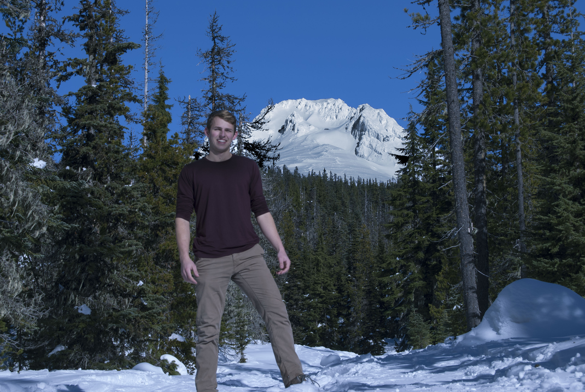

Although born in Pennsylvania, I grew up in Portland, Oregon. I attended Lincoln High School, where I competed on the Constitution Team, was a co-president of the Model United Nations club, ran track & field, and was a leader in the school concert & marching band. I went on to enroll in Tufts University, and recently graduated with a B.A. in Political Science and a mathematics minor. During my time at Tufts, I also developed an interest in computer science, taking the opportunity to learn C++, web design, and data structures. I hope to incorporate my interests by utilizing technology to go into a career in digital communications and social media development.
Throughout my childhood, I developed an appreciation for the outdoors. I have been able to incorporate that passion into my academic and career pursuits. In college, I sought out courses within my major that related to the outdoors and environment, such as the Politics of Oil and Energy and Environmental Policy. In 2015, I had the opportunity to intern for the American Hiking Society, where I worked on development and communications. In 2016, I began leading trips for Overland, a company that offers outdoor adventures for elementary through high school students. This past summer, I had the opportunity to lead Overland trips in the Rock Mountains of Colorado. In my free time, I enjoy the outdoors through rock climbing, hiking, biking, backpacking, and photography.
